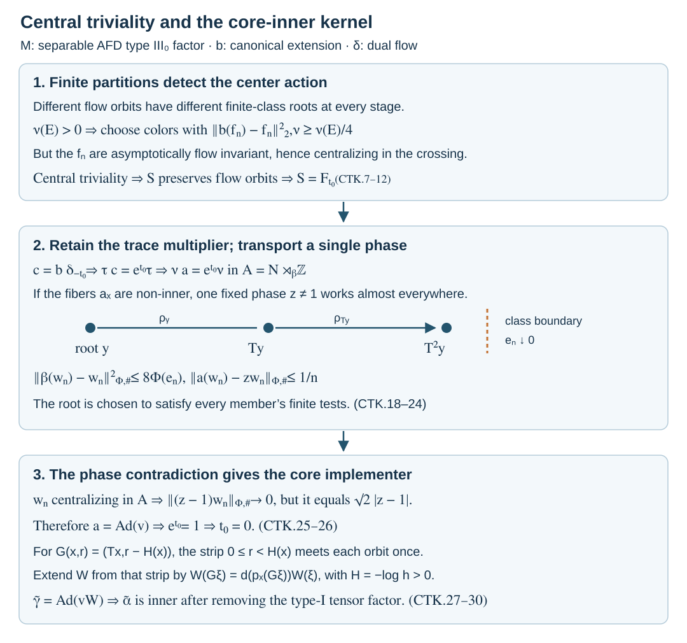

Central triviality and the core-inner kernel
For a separable approximately finite-dimensional factor of type \(\mathrm{III}_0\), an automorphism fixes all centralizing sequences exactly when a unitary in its continuous core implements it. The implementing unitary need not belong to the original factor.
We detect the action on the center of the core by finite orbit partitions. Measurable phase witnesses then force the action on the semifinite fibers to be inner. The proof keeps the fields variable throughout.
The groups and the core normalization
Let \(M\ne0\) be an AFD factor of type \(\mathrm{III}_0\) with separable predual. A bounded sequence \((x_n)\) is centralizing when
\[ \|[x_n,\eta]\|\longrightarrow0\qquad(\eta\in M_*), \quad (x\eta)(z)=\eta(zx),\quad(\eta x)(z)=\eta(xz). \tag{CTK.1} \]An automorphism is centrally trivial when it fixes every such sequence modulo strong-star null sequences. Denote this group by \(\operatorname{Ct}(M)\). If \(P=\widetilde M\) is the continuous core, put
\[ \operatorname{Cnt}_r(M)= \{\operatorname{Ad}(V)|_M:V\in\mathcal U(P),\ VMV^*=M\}. \tag{CTK.2} \]We prove
\[ \operatorname{Ct}(M)=\operatorname{Cnt}_r(M) =\{\alpha:\widetilde\alpha\text{ is inner on }P\}. \tag{CTK.3} \]Section 9 gives the equivalent formula in every faithful normal state chart.
Normal isomorphisms transport centralizing sequences and bounded strong-star convergence. Inner automorphisms are centrally trivial: predual centrality implies strong-star commutation with each fixed operator. The cancellation estimate proving that implication is in Section 3 of Trace scaling on the hyperfinite semifinite factor. Thus central triviality is unchanged by inner perturbation and normal conjugacy.
Fix \(\alpha\in\operatorname{Ct}(M)\). The dominant-weight comparison and canonical-extension calculation in EDD02–03 do not use the module hypothesis until they assert that the core center is fixed. They give an inner perturbation \(\alpha_0\) preserving a faithful dominant weight \(\varphi\), and a normal automorphism
\[ b=\widetilde{\alpha_0}\in\operatorname{Aut}(P),\qquad b\delta_s=\delta_s b,\qquad \tau_P b=\tau_P,\qquad \tau_P\delta_s=e^{-s}\tau_P. \tag{CTK.4} \]Here \(\delta\) is the dual flow and \(\tau_P\) is the entire canonical semifinite trace. In particular, its invariance is not just an identity on an arbitrarily chosen finite corner. The same calculation identifies the double crossing equivariantly:
\[ P\rtimes_\delta\mathbb R \cong M\bar\otimes B(L^2\mathbb R),\qquad \widehat b\longleftrightarrow\alpha_0\otimes\mathrm{id}. \tag{CTK.5} \]The algebra \(P\) is type \(\mathrm{II}_\infty\), and its center flow is properly ergodic, by the core and return inputs of EDD03–04.
Central tests descend from the core
Type-I amplification preserves central triviality. The full matrix proof is Trace scaling, Proposition 3.1. Its scope is every separable-predual algebra. Briefly, for a bounded centralizing sequence \(X_n\) in \(M\bar\otimes B(\ell^2)\), the \((1,1)\) coefficient \(y_n\) is centralizing in \(M\). Commutators with the fixed matrix units show
\[ X_n-y_n\otimes1\longrightarrow0 \quad\text{strongly-star}. \tag{CTK.6} \]The proof tests each fixed matrix column and its adjoint, and then uses finite-support Hilbert vectors and the uniform bound. It does not assume that convergence of the entries is uniform in their indices. Equation (CTK.6) proves the assertion for ordinary sequences as well as for the ultrafilter formulation. Therefore \(\widehat b\) in (CTK.5) is centrally trivial.
Let \(C=Z(P)\), and let \(f_n\in C\) be uniformly bounded with
\[ \delta_s(f_n)-f_n\longrightarrow0 \quad\text{strongly-star for every fixed }s\in\mathbb R. \tag{CTK.7} \]Their regular images are centralizing in \(P\rtimes_\delta\mathbb R\). Indeed, on \(L^2(\mathbb R;H_P)\),
\[ (\pi(f_n)\xi)(s)=\delta_{-s}(f_n)\xi(s). \]The constant operator \(A_n=1\otimes f_n\) commutes with the whole regular crossed product: it commutes with every coefficient because \(f_n\) is central, and with every translation because it is constant. Bounded dominated convergence gives \(\pi(f_n)-A_n\to0\) strongly-star. On a fixed vector functional the predual commutator is bounded by the two corresponding vector norms of this difference. Vector-functional density and the uniform bound extend convergence to the whole predual; see CP04–06.
Consequently central triviality of \(\widehat b\) gives
\[ b(f_n)-f_n\longrightarrow0\quad\text{strongly-star in }P. \tag{CTK.8} \]We used the faithful normal regular inclusion to return to \(P\); bounded strong-star convergence is intrinsic under that inclusion.
Finite partitions detect the flow orbits
Use the nonsingular suspension model supplied in EDD04 by the full return-system theorem. Thus
\[ \begin{gathered} C=L^\infty(Y,\nu),\\ Y=\{(x,u):x\in X,\ 0\le u<r(x)\}, \\ r(x)\ge\delta_0>0. \end{gathered} \tag{CTK.9} \]with the usual endpoint identification over an ergodic aperiodic nonsingular transformation \(T\). Write \(F_s\) for the suspension flow, so \(\delta_s f=f\circ F_{-s}\). The measure \(\nu\) may be any equivalent probability, in particular the restriction of a faithful normal state of \(P\). Its measure class is the suspension measure class. Let \(p:Y\to X\) be the base projection.
MAI03 constructs increasing finite Borel relations \(\mathcal R_n\) exhausting the \(T\)-orbit relation on an invariant conull base, with Borel roots \(q_n\). For any Borel function \(g_n:X\to\{0,1\}\), set
\[ f_n(y)=g_n(q_n(p(y))). \tag{CTK.10} \]These functions satisfy (CTK.7), uniformly at the pointwise level on each compact time interval. To see this, over \(|s|\le L\) a suspension point visits only finitely many base iterates, bounded in number by the lower roof bound and \(L\). Each of those iterates eventually belongs to the same \(\mathcal R_n\)-class as the original base point. Their roots then agree. This conclusion holds for every choice of the functions \(g_n\). Bounded convergence gives (CTK.7) for all normal tests. No invariant probability for \(T\) or \(F\) is assumed.
Represent \(b|_C\) by a nonsingular Borel point automorphism \(S\), so \(b(f)=f\circ S^{-1}\). We claim that \(S\) preserves each flow orbit almost everywhere. Suppose instead that
\[ E=\{y:p(S^{-1}y)\not\mathrel{\mathcal R_T}p(y)\} \quad\text{has }\nu(E)>0. \]For every \(n\), the two roots \(q_n(p(S^{-1}y))\) and \(q_n(p(y))\) are distinct on \(E\). Choose finite Borel partitions of \(X\) increasing to a countable point-separating family. For this fixed \(n\), one partition separates the two roots on a subset of \(E\) of measure greater than \(\nu(E)/2\). Color its finitely many cells independently by zero or one. Averaging over all colorings shows that some coloring \(g_n\) separates the paired roots on a set of measure at least \(\nu(E)/4\). Thus
\[ \|b(f_n)-f_n\|_{2,\nu}^2\ge\nu(E)/4. \tag{CTK.11} \]This contradicts (CTK.8). Hence \(S(y)\) lies on the flow orbit of \(y\).
The suspension flow is free on the retained conull set because \(T\) is aperiodic. Therefore there is a unique real \(t(y)\) with \(S(y)=F_{t(y)}y\). This function is measurable: the two base points differ by a unique integer iterate, detected in a countable Borel enumeration; the required time is the corresponding finite signed roof sum plus the difference of heights. Since \(b\) commutes with \(\delta\), uniqueness gives \(t(F_s y)=t(y)\) almost everywhere for each \(s\). Bounded Borel functions of \(t\) are flow invariant. Ergodicity makes \(t\) a constant \(t_0\), and hence
\[ b|_C=\delta_{t_0}|_C. \tag{CTK.12} \]This argument establishes a translation, not yet the identity.
Carry the scalar trace multiplier into a return algebra
Put \(c=b\delta_{-t_0}\). Then
\[ c|_C=\mathrm{id},\qquad c\delta_s=\delta_s c,\qquad \tau_P c=k\tau_P,\qquad k=e^{t_0}>0. \tag{CTK.13} \]On \(P\rtimes_\delta\mathbb R\), the extension of \(\delta_{-t_0}\) fixing the real implementers is \(\operatorname{Ad}(\Lambda_{-t_0})\). Thus \(\widehat c\) is an inner perturbation of \(\widehat b\), and is centrally trivial.
We need the return construction with this multiplier retained. The actual maps and their equivariance are proved in EDD04–07, from the return-system proof and whole-trace proof. Here is the modification at every trace step.
Lift \(c\) as \(\mathrm{id}\otimes c\) to \(\ell^\infty(\mathbb Z)\bar\otimes P\). It fixes all central hitting projections and the specified real coordinate, commutes with the lifted real action and the deck shift, and multiplies the counting trace by \(k\). Under the normal onto product map, commuting with real translations and fixing their coordinate identifies it as \(\mathrm{id}_{L^\infty(\mathbb R)}\otimes a_D\). The trace is \(e^{-s}ds\otimes\kappa\). Testing on \(g(s)\otimes x\), with \(g\ge0\) bounded and \(\int e^{-s}g(s)\,ds=1\), gives
\[ \kappa(a_D(x))=k\kappa(x)\qquad(x\in D_+). \]This holds on the whole cone, including infinite values. The deck unitary is a function of the central roof and is fixed by this automorphism.
Consequently the return construction gives
\[ \begin{gathered} A=N\rtimes_\beta\mathbb Z,\qquad VxV^*=\beta(x),\\ \nu\beta=\nu_h,\qquad 0<h\le\lambda<1,\quad h\in Z(N),\\ a|_{Z(N)}=\mathrm{id},\qquad a\beta=\beta a,\qquad \nu a=k\nu,\\ \gamma|_N=a,\qquad\gamma(V)=V, \end{gathered} \tag{CTK.14} \]where \(N=B(L^2\mathbb R)\bar\otimes D\), \(a=\mathrm{id}\otimes a_D\), and \(\nu=\operatorname{Tr}\otimes\kappa\). The normal crossed-product isomorphisms identify \(\gamma\) with \(\mathrm{id}_{B(\ell^2\mathbb Z)}\otimes\widehat c\). Equivariance uses exactly the fixed central shift cocycle and both generator families checked in EDD07; trace invariance was not used in those checks. Thus \(\gamma\) is centrally trivial.
The algebra \(A\) is stably isomorphic to \(M\); \(N\) is type \(\mathrm{II}_\infty\) with separable predual. It is injective, because it is the expected coefficient algebra of the injective algebra \(A\). The center transformation of \(\beta\) is ergodic, aperiodic and nonsingular. These are the full type and center assertions of the return construction, as used in EDD06. In particular the following argument applies to the entire coefficient algebra.
Measurable phase witnesses
The whole-field and trace construction in MAI02, before its use of trace preservation of the automorphism, applies to \(N\). It gives
\[ N=L^\infty(X,\mu)\bar\otimes Q,\qquad Q=R\bar\otimes B(\ell^2),\qquad \nu=\int_X\tau_Q\,d\mu. \tag{CTK.15} \]Here \(\mu\) is a probability. The automorphism \(a\) has a Borel field \(a_x\), and \(\beta\) has Borel transports \(\rho_x\) with
\[ (\beta z)(Tx)=\rho_x(z(x)),\qquad a_{Tx}\rho_x=\rho_x a_x. \tag{CTK.16} \]The normal inverse, full algebra realization and canonical implementation in MAI02 justify these fields. Countable tests and their \(T\)-saturation give one invariant conull set for all integer compositions.
Two earlier factor results are used here. Trace scaling, Theorem 4.2 proves \(\operatorname{Ct}(Q)=\operatorname{Inn}(Q)\). Relative character eigenunitaries, Theorem 4.1 supplies a unitary eigenvector in \(Q_\omega\) for a character trivial on the centrally trivial kernel. The strong-stability hypothesis holds for \(Q\): interleaving the tracial matrix sites gives \(R\bar\otimes R\cong R\), and the \(B(\ell^2)\) leg is unchanged.
It follows that if \(\zeta\notin\operatorname{Ct}(Q)\), there is a phase in the countable set
\[ \mathcal L=\{-1\}\cup\{e^{2\pi i/p}:p=2,3,\ldots\} \tag{CTK.17} \]and an ordinary centralizing unitary sequence \(u_j\) such that \(\zeta(u_j)-z u_j\to0\) strongly-star. Indeed the kernel of the integer action is \(p\mathbb Z\), with \(p\ge2\) or \(p=0\); choose the corresponding character, using \(z=-1\) when \(p=0\). Lift its quotient eigenunitary exactly by MAI08. For a faithful state and a dense predual sequence, successively intersect the finitely many ultrafilter-large centrality and phase conditions, and choose increasing coordinates. This gives the stated ordinary sequence.
We must choose a phase measurably across the field. Fix a faithful normal state \(\varphi_Q\), norm-dense predual tests \(\eta_i\), and a countable strongly dense set of unitaries \(v_l\). For \(z\in\mathcal L\), let \(E_z\) consist of those \(x\) for which, for every \(m\), some \(v_l\) satisfies
\[ \|[v_l,\eta_i]\|<1/m\ (i\le m),\qquad \|a_x(v_l)-zv_l\|_{\varphi_Q,\#}<1/m. \tag{CTK.18} \]Each set is Borel. Predual norms are suprema over a countable strong-star dense contraction set; phase seminorms are Borel by the field realization. Conversely (CTK.18) constructs a centralizing phase sequence. Strong density of the \(v_l\) does not change its existence: the finitely many tests are continuous on the unitary group. The norm convention is \(\|w\|_{\varphi_Q,\#}^2=\varphi_Q(w^*w)+\varphi_Q(ww^*)\).
The sets \(E_z\) are \(T\)-invariant by (CTK.16): conjugating an automorphism transports both centrality and strong-star convergence. An inner automorphism has no such nontrivial phase sequence. The two factor results therefore show that
\[ \{x:a_x\text{ is not inner}\}=\bigcup_{z\in\mathcal L}E_z. \tag{CTK.19} \]If this set has positive measure, some \(E_z\) has positive measure and hence is conull by ergodicity. Fix that one \(z\ne1\).
Coherent witnesses force inner fibers
Use the finite relations, roots and signed offsets of MAI03 for the return transformation in (CTK.16). Write \(x=T^{j_n(x)}q_n(x)\), and let
\[ B_n=\{x:(T^{-1}x,x)\notin\mathcal R_n\},\qquad e_n=1_{B_n}\downarrow0. \]At each root \(y\), choose the first \(v_l\) for which, at every member \(x=T^j y\) of its finite class,
\[ \begin{gathered} \|[\rho_{j,y}(v_l),\eta_i]\|<1/n\quad(i\le n),\\ \|a_x(\rho_{j,y}(v_l))-z\rho_{j,y}(v_l)\|_{\varphi_Q,\#}<1/n. \end{gathered} \tag{CTK.20} \]The choice exists: a centralizing phase sequence for \(a_y\) satisfies the finite transported normal-functional and state tests, by (CTK.16). Strong density gives a member of the fixed countable unitary family satisfying all inequalities strictly. Bounded finite class enumeration and the Borel norm tests make the first-successful choice measurable.
Transport the chosen unitary from its root:
\[ w_n(x)=\rho_{j_n(x),q_n(x)}(v^{(n)}(q_n(x))). \tag{CTK.21} \]This is a unitary in the whole algebra \(N\). Internal edges have the same root, so
\[ (\beta(w_n)-w_n)(1-e_n)=0,\qquad \|\beta(w_n)-w_n\|_{\Phi,\#}^2\le8\Phi(e_n)\longrightarrow0 \tag{CTK.22} \]for every normal positive \(\Phi\).
For \(g\in L^1(X,\mu)\) and \(i\le n\), the first tests give \(\|[w_n,g\otimes\eta_i]\|\le\|g\|_1/n\). Density of product normal functionals makes \(w_n\) centralizing in \(N\). With the faithful product state \(\Phi=\mu\otimes\varphi_Q\), the second tests give
\[ \|a(w_n)-zw_n\|_{\Phi,\#}\le1/n. \tag{CTK.23} \]The sequence is centralizing in \(A=N\rtimes_\beta\mathbb Z\) as well. Here is the full predual test. Let \(C_j(X)=E(XV^{-j})\). Its normal coefficient functionals have norm-dense span by Fourier uniqueness and Hahn–Banach, as in MAI05. For \(b=C_j(X)\),
\[ C_j(Xw_n-w_nX) =b(\beta^j(w_n)-w_n)+(bw_n-w_nb). \tag{CTK.24} \]Fixed-power telescoping of (CTK.22) and the normal-functional module estimate make the first term uniformly small on \(\|X\|\le1\). Predual centrality in \(N\) controls the second. Density and the uniform bound complete the argument for every functional on \(A\).
Central triviality of \(\gamma\) now forces \(a(w_n)-w_n\to0\) strongly-star. Together with (CTK.23) this would imply
\[ \|(z-1)w_n\|_{\Phi,\#}\longrightarrow0, \qquad \|(z-1)w_n\|_{\Phi,\#}=\sqrt2\,|z-1|>0, \]a contradiction. Thus \(a_x\) is inner almost everywhere.
Choose its implementers measurably. Fix a countable dense core \(\mathcal D\) in the unit ball of \(Q\). The relation
\[ \begin{gathered} \mathcal I=\{(x,v)\in X\times\mathcal U(Q):\\ v d v^*=a_x(d)\quad(d\in\mathcal D)\} \end{gathered} \tag{CTK.25} \]is Borel and has nonempty sections almost everywhere. SCF05 gives a selector in the completed measure and a Borel representative off a null set. Equality extends to all of \(Q\) by normality. The resulting unitary field \(v\in N\) satisfies \(a=\operatorname{Ad}(v)\).
Since inner automorphisms preserve the full trace, (CTK.14) now gives \(k\nu=\nu\). Evaluate at any nonzero finite-trace positive element to obtain \(k=1\). Equation (CTK.13) yields
\[ t_0=0,\qquad b|_{Z(P)}=\mathrm{id}. \tag{CTK.26} \]
The finite-class arrows are schematic transports in the actual variable field, not a periodic model for the base transformation. The separation estimate is (CTK.11), the boundary estimate is (CTK.22), and the phase contradiction uses (CTK.23). The height strip belongs to the core construction in the next section.
Construct the core implementer
Retain the return presentation and \(a=\operatorname{Ad}(v)\). Put \(\gamma_1=\operatorname{Ad}(v^*)\gamma\). It fixes \(N\), and
\[ \gamma_1(V)=dV,\qquad d=v^*\beta(v)\in\mathcal U(Z(N)). \tag{CTK.27} \]Centrality follows from \(a\beta=\beta a\): the two unitaries \(v\) and \(\beta(v)\) implement the same automorphism of \(N\).
Let \(\psi=\nu E\), the faithful normal semifinite dual weight. Its modular action fixes \(N\) and satisfies \(\sigma_s^\psi(V)=Vh^{is}\), by the full dual-weight construction in EDD09. The automorphism \(\gamma_1\) preserves \(\psi\). In the core of \(A\), the algebra generated by \(N\) and the real implementers is the full product \(N\bar\otimes L^\infty(\mathbb R)\). Write \(\lambda_s=e^{isr}\), and \(H(x)=-\log h(x)\ge-\log\lambda>0\). Conjugation by \(V\) acts on its center by the point map
\[ G(x,r)=(Tx,r-H(x)). \tag{CTK.28} \]Indeed \(\lambda_sV\lambda_s^*=Vh^{is}\) gives \(V\lambda_sV^*=\beta(h)^{-is}\lambda_s\), agreeing with pullback by \(G^{-1}\).
The strip \(D=\{(x,r):0\le r<H(x)\}\) meets each \(G\)-orbit exactly once. Forward iterates decrease the height by a fixed positive lower bound; backward iterates increase it. The unique crossing from nonnegative to negative height proves both existence and uniqueness, and its integer label is Borel.
Define a central unitary \(W\) of the product algebra to be one on \(D\) and extend it by
\[ W(Gz)=d(p_X(Gz))W(z). \tag{CTK.29} \]On every integer-label sector this is a finite product of the indicated values of \(d\), or the inverse product for a negative label; thus \(W\) is measurable and unitary. Equation (CTK.29) gives \(W\,\operatorname{Ad}(V)(W^*)=d\). Hence \(\operatorname{Ad}(W)\) fixes \(N\) and the \(\lambda_s\), and sends \(V\) to \(dV\). It equals the canonical extension of \(\gamma_1\) on all generators, so
\[ \widetilde\gamma=\operatorname{Ad}(vW). \tag{CTK.30} \]By (CTK.26), \(c=b\). Thus the equivariance in Section 4 and (CTK.5) identify \(\gamma\) exactly with \(\alpha_0\otimes\mathrm{id}_{B(H_0)}\) through a normal isomorphism, for a separable infinite-dimensional \(H_0\). Canonical core naturality transports (CTK.30). In the product weight chart its implementer \(Z\) lies in \(P\bar\otimes B(H_0)\) and implements \(\widetilde{\alpha_0}\otimes\mathrm{id}\). It therefore commutes with \(1\otimes B(H_0)\). The matrix-unit commutant calculation gives \(Z=Z_0\otimes1\), with \(Z_0\in\mathcal U(P)\). Thus \(\widetilde{\alpha_0}\), and after undoing the original inner perturbation also \(\widetilde\alpha\), is inner. This proves the forward inclusion in (CTK.3).
Every core normalizer is centrally trivial
This direction does not need AFD or type \(\mathrm{III}_0\). Let \(V\in\mathcal U(P)\) normalize \(M\), and let \(u_n\in\mathcal U(M)\) be centralizing. Then \(\operatorname{Ad}(u_n)\to\mathrm{id}\) in the \(u\)-topology. MCC01 gives
\[ \operatorname{Ad}(\pi(u_n))\longrightarrow\mathrm{id} \quad\text{in }\operatorname{Aut}(P). \tag{CTK.31} \]This entails pointwise strong-star convergence, as does the sequence of inverse automorphisms. Put \(a_n=\pi(u_n)\). The identities
\[ [V,a_n]=a_n(a_n^*Va_n-V),\qquad [V,a_n]^*=a_n^*(V^*-a_nV^*a_n^*) \tag{CTK.32} \]place the varying unitary on the left. Both right-hand sides tend strongly to zero. Consequently \(Va_nV^*-a_n\to0\) strongly-star.
Every bounded centralizing sequence is a linear combination of four centralizing unitary sequences after a fixed rescaling. Split it into self-adjoint contractions \(x_n\) and use
\[ u_n=x_n+i(1-x_n^2)^{1/2},\qquad x_n=(u_n+u_n^*)/2. \]The algebra of bounded centralizing sequences is a unital \(C^*\)-algebra: the product and adjoint predual-commutator identities give closure, and uniform polynomial approximation gives the displayed continuous functional calculus. Thus the preceding unitary argument proves central triviality on every bounded centralizing sequence.
An inner canonical extension restricts to a core-normalizer automorphism, so all three groups in (CTK.3) are equal.
Every faithful-state chart and the asymptotic period
Fix any faithful normal state \(\chi\) on \(M\). In its core chart let \(\delta\) denote the dual flow and \(C=Z(\widetilde M)\). The full fixed-point, relative-commutant and central-cocycle realization proofs are Sections 1–4 of Core fixed points and central cocycles. They establish
\[ \widetilde M^\delta=M,\qquad M'\cap\widetilde M=C, \tag{CTK.33} \]and, for each strongly continuous central cocycle \(c_{s+t}=c_s\delta_s(c_t)\), a unitary \(V_c^\chi\) with \(\delta_s(V_c^\chi)=V_c^\chi c_s\). The realizer lies in the abelian algebra generated by \(C\) and the spectral projections of \(\log h_\chi\); its proof uses bounded spectral averages and polar supports, not evaluation of a measurable field on an unchecked null slice.
For a core normalizer \(V\), the relative-commutant identity makes
\[ c_s=V^*\delta_s(V)\in\mathcal U(C) \tag{CTK.34} \]a strongly continuous central cocycle. The two normalizing inclusions follow from (CTK.33) and centrality of \(c_s\). Also \(u=V(V_c^\chi)^*\) is dual-flow fixed and belongs to \(\mathcal U(M)\). Define \(\overline\sigma_c^\chi=\operatorname{Ad}(V_c^\chi)|_M\). We obtain
\[ \begin{gathered} \alpha\in\operatorname{Ct}(M) \quad\Longleftrightarrow\quad \alpha=\operatorname{Ad}(u)\,\overline\sigma_c^\chi\\ \text{for some }u\in\mathcal U(M),\\ c\in Z^1(\mathbb R,\mathcal U(C)). \end{gathered} \tag{CTK.35} \]The converse uses Section 8. A different realizer differs by a left unitary of \(M\), absorbed into \(u\). Normal changes of weight chart fix \(M\) and intertwine the dual actions, so this assertion holds for every faithful normal state, not just the dominant weight used in Section 1.
Central triviality is a normal subgroup: automorphisms transport centralizing sequences and strong-star null sequences, which verifies multiplication, inversion and conjugation directly. For any automorphism \(\eta\), define \(p_a(\eta)\) as the least positive \(p\) with \(\eta^p\in\operatorname{Ct}(M)\), or zero when no such positive integer exists. Equivalently it is the order of the induced action on \(M_\omega\), with infinite order denoted by zero. To check this equivalence, a displaced ultrafilter-centralizing sequence yields an ordinary displaced centralizing sequence by selecting successively the first finitely many predual tests and a fixed positive displacement bound. Conversely, an ordinary displaced sequence has a subsequence whose displacement is bounded below at every coordinate, and so gives a nonzero displacement in every free-ultrafilter quotient. These are the kernel arguments of Section 1 of the relative-character lesson, applied to each power. The subgroup of integers whose powers are centrally trivial is
\[ \{n\in\mathbb Z:\eta^n\in\operatorname{Cnt}_r(M)\} =p_a(\eta)\mathbb Z, \qquad 0\mathbb Z=\{0\}. \tag{CTK.36} \]For a positive minimum use division with remainder. If there is no positive element, inversion excludes a negative one. This proves Exercise XVIII.2.4(a), including the zero-period case.
Exercises with solutions
1. Why does the orbit argument stop at a translation?
Solution. The functions in (CTK.10) become invariant under every fixed flow time, so they cannot distinguish the identity from a fixed translation. They detect whether the two points lie on the same flow orbit. Commutation and ergodicity then make the time displacement constant. Only the trace multiplier and the fiber argument in Sections 4–6 force that constant to be zero.
2. Is an invariant probability used in the finite partitions?
Solution. No. Exhaustion of the orbit relation gives eventual equality of roots on every finite list of base iterates. Bounded convergence works for any equivalent probability. The coloring estimate (CTK.11) uses that probability directly; it never replaces the measure of a set by the measure of its translate.
3. Why can one phase be used on the whole base?
Solution. The measurable sets \(E_z\) are defined by countably many finite tests. Their countable union is the non-inner locus. If it is not null, one \(E_z\) has positive measure. Conjugacy of neighboring fiber automorphisms makes that set invariant, and ergodicity makes it conull. This supplies an actual fixed \(z\ne1\), rather than a phase depending on the stage or on the root.
4. Which power obtains a core implementer at finite positive period?
Solution. If \(p_a(\eta)=p>1\), (CTK.36) says that \(\widetilde{\eta^p}\) is inner. It does not say that \(\widetilde\eta\) is inner: that would make \(\eta\) centrally trivial and give \(p=1\). When \(p_a(\eta)=0\), no nonzero power has an inner canonical extension.
5. Identify the source conclusions.
Solution. Equations (CTK.3) and (CTK.35) prove Theorem XVIII.2.8(ii), including its every-faithful-state formulation, and Exercise XVIII.2.3. Equation (CTK.36) proves Exercise XVIII.2.4(a). The approximate-inner equality in Theorem 2.8(i) is the separate theorem in MAI01–06; module surjectivity and splitting are separate obligations.
The source target is M. Takesaki, Theory of Operator Algebras III (2003), XVIII.2, Theorem 2.8(ii), printed p.326, and Exercises 3 and 4(a), printed p.328. A freely available antecedent is Y. Kawahigashi, C. E. Sutherland and M. Takesaki, The structure of the automorphism group of an injective factor and the cocycle conjugacy of discrete abelian group actions, Acta Mathematica 169 (1992), 105–130, Project Euclid, especially Lemmas 7–12. New exposition and SVG diagram: CC0-1.0, authored by OpenAI Codex (AI).